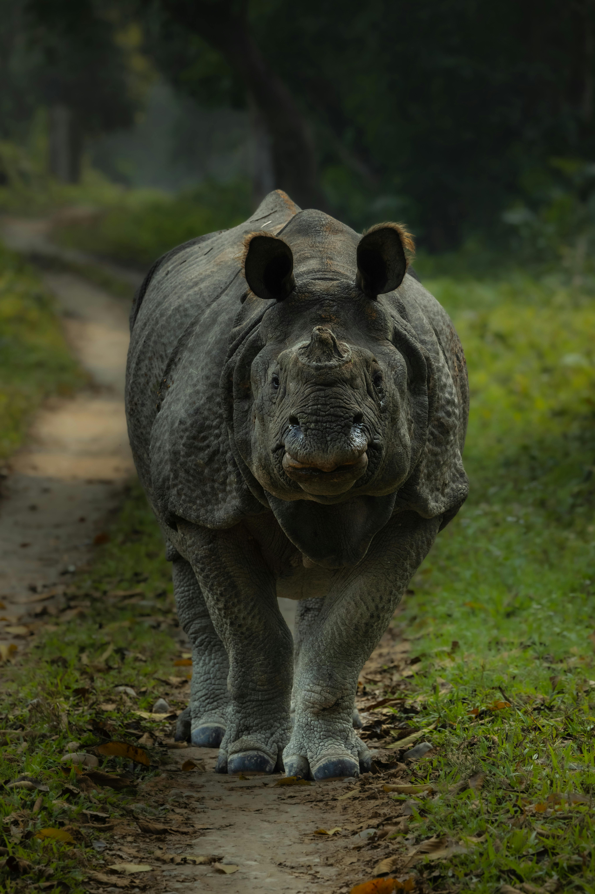
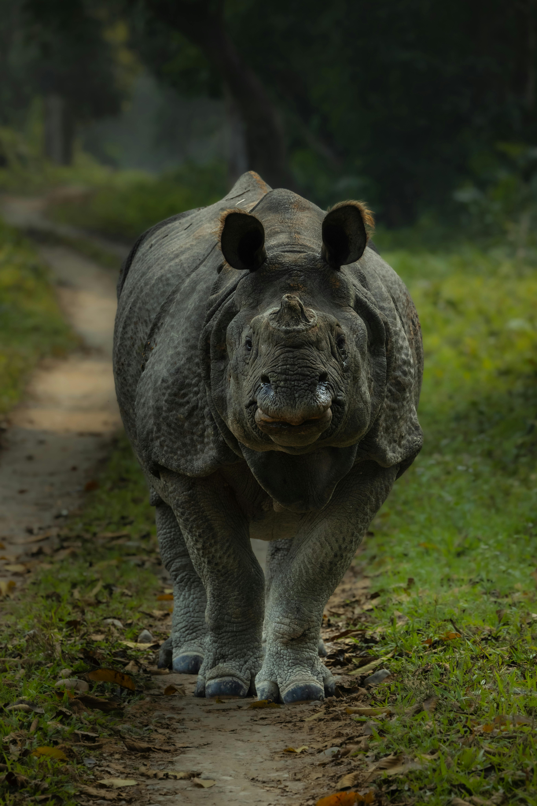

This is a buffalo. It is a herbivore and is also prey to carnivores such as lions, cheetahs and leapords however it is not as easy to kill. A lone lion cannot kill a buffalo on its own. It will take great strength to do so and lots of team-work!
 

This is a rhino.
Here are interesting facts about Rhinos


Hello I am a Zebra! Let me tell you a little bit about myself and my kin...